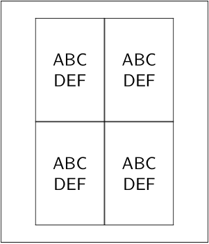

Contents
Summary
The command
\showprint
visualizes paper and layout arrangement options
Settings
| \showprint[...,...][...,...][...=...,...] | |
| [...,...] | inherits from \setuppapersize |
| [...,...] | inherits from \setuppapersize |
| ...=...,... | inherits from \setuplayout |
Description
Visualizes the combined effect of
\setuppapersize
[arg1][arg2]
and
\setuplayout
[arg3]
Examples
Example 1
-
\showprint[][][nx=2,ny=2,location=middle]
- 
Example 2
Output is too big to be useful on the wiki, but you could run something like this:
\setuppapersize[A3][A3] \switchtobodyfont[8pt] \starttext \startcombination[4*4] {\showprint} {\strut} {\showprint[][][location=middle]} {\type{location=middle}} {\showprint[][][location=middle,marking=on]} {\type{marking=on}\break\type{location=middle}} {\showprint[][][location=middle,marking=on,nx=2]} {\type{marking=on}\break\type{location=middle}\break\type{nx=2}} {\showprint[][][location=left]} {\type{location=left}} {\showprint[][][location=right]} {\type{location=right}} {\showprint[][][location={left,bottom}]} {\type{location={left,bottom}}} {\showprint[][][location={right,bottom}]} {\type{location={right,bottom}}} {\showprint[][][nx=2,ny=1]} {\type{nx=2,ny=1}} {\showprint[][][nx=1,ny=2]} {\type{nx=1,ny=2}} {\showprint[][][nx=2,ny=2]} {\type{nx=2,ny=2}} {\showprint[][][nx=2,ny=2,location=middle]} {\type{nx=2,ny=2}\break\type{location=middle}} {\showprint[][][backoffset=3pt]} {\type{backoffset=.5cm}} {\showprint[][][topoffset=3pt]} {\type{topoffset=.5cm}} {\showprint[][][scale=1.5]} {\type{scale=1.5}} {\showprint[][][scale=0.8]} {\type{scale=0.8}} \stopcombination \startcombination[3*4] {\showprint[landscape][] [location=middle]} {\type{landscape}} {\showprint[] [landscape][location=middle]} {\strut\break\type{landscape}} {\showprint[landscape][landscape][location=middle]} {\type{landscape}\break\type{landscape}} {\showprint[90] [] [location=middle]} {\type{90}} {\showprint[] [90] [location=middle]} {\strut\break\type{90}} {\showprint[90] [90] [location=middle]} {\type{90}\break\type{90}} {\showprint[180] [] [location=middle]} {\type{180}} {\showprint[] [180] [location=middle]} {\strut\break\type{180}} {\showprint[180] [180] [location=middle]} {\type{180}\break\type{180}} {\showprint[mirrored] [] [location=middle]} {\type{mirrored}} {\showprint[] [mirrored] [location=middle]} {\strut\break\type{mirrored}} {\showprint[mirrored] [mirrored] [location=middle]} {\type{mirrored}\break\type{mirrored}} \stopcombination \stoptext